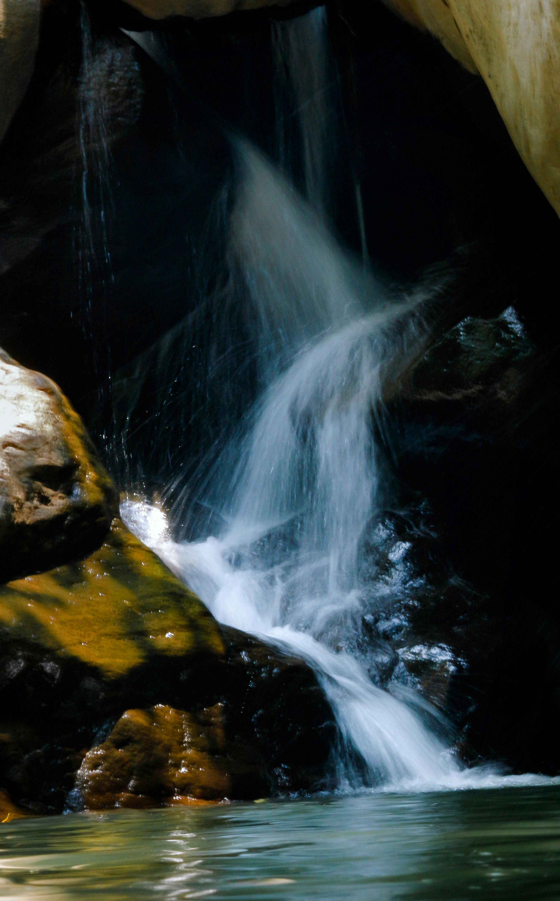

My Travel Blog
This blog describes the tourist places I have visited in chronological order along with my personal experiences.
This blog describes the tourist places I have visited in chronological order along with my personal experiences.
Athirappilly Waterfalls, located in Kerala, is one of the most beautiful waterfalls in India. The scenic greenery, powerful water flow, and calm surroundings made the visit memorable and refreshing. Athirappilly Waterfalls, often called the "Niagara of India," is a breathtaking 80-foot cascade in Kerala’s Thrissur district, nestled within the lush Sholayar ranges. It is not just a natural wonder but a massive cinematic icon, having featured in major blockbusters like Baahubali and Dil Se (song "Jiya Jale")
